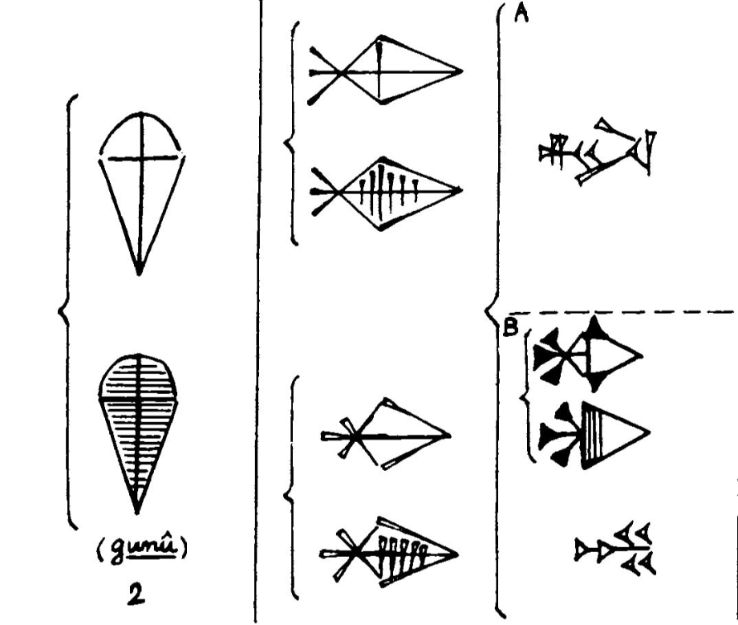
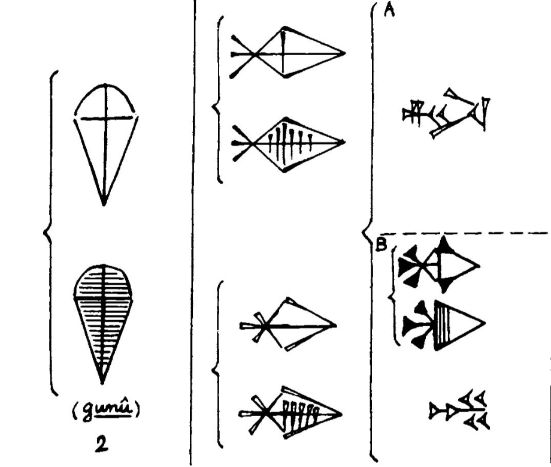

Brass, lazurite, 2018
Imagery and mystery of the Assyrian art have been impressing me for a long stretch of time. Its cuneiform characters are ornamental and precise. This system of signs is the starting point of creating of this jewelry piece. The assyriologist and reader of Higher School of Economics Ilya Archipov helped me to understand the meaning of some symbols. He suggested several different options to choose from, and I went for the clearest and the simplest one. The shape of the paper knife is stylized cuneiform GÍR, which is a figure of a knife and is translated likewise. In my opinion nowadays a paper knife is a symbol of opening a letter, a text and knowledge hidden from the others’ eyes.
Photo: Max Nesterov, Irina Bogolyubova
 
